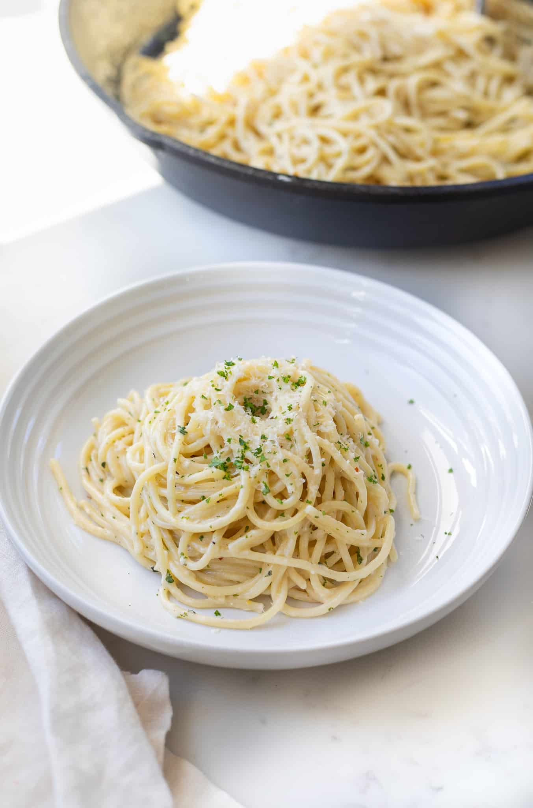

Spicy Lemon Garlic Pasta

Ingredients:
- 1 tbsp. olive oil
- 5 garlic cloves (or if you're like me and love garlic, go crazy), thinly sliced
- 4 cups vegetable broth
- 1 lb. pasta of choice
- 2 cups full-fat coconut milk
- 2 tbsp. lemon juice
- 6 oz. baby spinach
- 2 tsp. lemon zest
- 1/4 tsp. red pepper flakes or more--I love spicy!
- 1/4 cup oregano
Instructions
- In a large pot, combine the garlic and olive oil and bring them to a gentle simmer. Cook them for about 3-4 minutes, until the garlic has softened and just started to brown.
- Add the veggie broth to the garlic and bring it to a boil.
- Now add the spaghetti, coconut milk, and lemon juice. Stir everything nicely, cover with a lid, and cook for about 12 minutes, stirring occasionally.
- At this point, add the spinach and cook for 1 more minute, until it wilts.
- Finally, add the lemon zest, red pepper flakes, and parsley (some salt may be needed). Cook for a minute longer. Stir and serve.